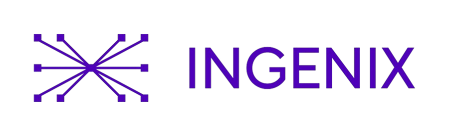
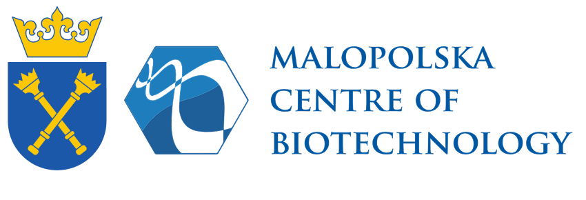
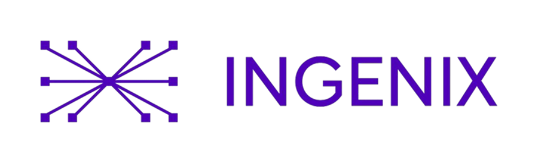
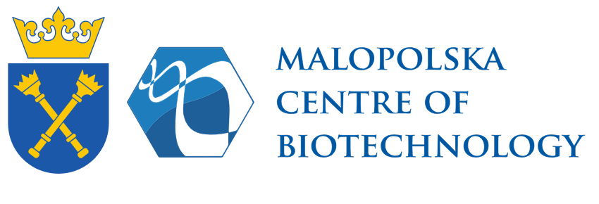

Where Computational Life Science Meets People
📍 Upcoming Meetup
Bioinformatics Community Meetup #5 takes place on 11 July 2026 at Kraków Miastem Startupów, Zabłocie 20.22.
The full program and speaker lineup will be published soon. Check back here for updates.
🗓️ Agenda
Our Sponsors
We thank our amazing sponsors for supporting the Bioinformatics Community Meetup #5.


 



Speakers
Aga Rasińska
👩🔬 About the speaker: With over a decade of experience in clinical analytics, bioinformatics, and digital transformation, Aga has led cross-functional initiatives across Europe and the U.S., bringing together data scientists, biostatisticians, and bioinformaticians to build data-driven solutions. She is an active advocate for open-source in pharma and passionate about breaking down silos between teams and tools.

Joanna Krawczyk
👩🔬 About the speaker: Joanna Krawczyk holds degrees in Mathematics and Bioinformatics from the University of Warsaw. Before joining Ingenix.ai, she worked at Ryvu Therapeutics, supporting target discovery and biomarker development through CRISPR screening. As a researcher at the Ewa Szczurek Computational Medicine Lab, she studied the tumor immune microenvironment using spatial and single-cell transcriptomics in collaboration with the IMMUcan consortium.

Marc Pielies Avellí
👨🔬 About the speaker: Marc Pielies Avellí began his academic path in Physics at the University of Barcelona, later completing an MSc in Biophysics and Computational Biology at Lund University. He is currently in the final year of his PhD at the University of Copenhagen, in collaboration with the Broad Institute of MIT and Harvard.

Mateusz Sikora
👨🔬 About the speaker: Head of the #Dioscuri Centre for Modelling of Posttranslational Modifications at the Malopolska Centre of Biotechnology, Jagiellonian University. Former postdoctoral researcher at the Max Planck Institute for Biophysics (Frankfurt) and IST Austria; PhD from the Institute of Physics, Polish Academy of Sciences. His work focuses on molecular simulations and AI-driven biology, including the open-source GlycoSHIELD platform integrated with the Gaia AI Factory (ACC Cyfronet AGH).

Diego Marques Coelho
👨🔬 About the speaker: Associate Director at Ryvu Therapeutics and Visiting Professor at UFRN. Previously at Mendelics and EMBL-EBI (Variant Effect Predictor). His research spans single-cell and bulk transcriptomics applied to autoimmune and neurodegenerative diseases, including large-scale hdWGCNA analyses.

Krzysztof A. Kowal
👨🔬 About the speaker: Assistant Professor at the University of Life Sciences in Lublin specializing in cancer genomics in dogs at the Sub-department of General and Molecular Genetics. Graduate in Forensic Biology and Biotechnology (ULSL) with a 2025 postgraduate diploma in Bioinformatics (PJATK). Member of the Polish Genetics Society (since 2020) and the Polish Bioinformatics Society (since 2024), creator of the "Bioinformatics in Bioeconomy" programme, and recipient of the Minister of Science Scholarship. Tool: canismitosnp.pl
🌌 Discussion Panel
Bioinformatics Beyond Earth: Challenges and Directions in Space Exploration
As humanity looks toward the Moon and Mars, bioinformatics is finding its place among the stars. This panel will explore how computational biology, space biotechnology, and AI-driven life sciences are shaping the future of space missions — from understanding biological responses to microgravity, to developing sustainable food systems and next-generation space medicine.
Format: 60-minute moderated discussion
👩🚀 Panel Host
Paweł P. Łabaj — Co-Founder & Co-CEO of onebiome / Deputy Director for Science at Małopolska Centre of Biotechnology UJ
Paweł is co-founder of Onebiome Sp. z o.o. Paweł focuses on developing advanced data-exploration methodologies and applying them to current biomedical challenges, with a strong emphasis on transcriptomics, metagenomics, and precision medicine. He plays a leading role in the SEQC consortium coordinated by the U.S. FDA, contributing to benchmarking large-scale gene-expression technologies and, in SEQC’s second phase, investigating how targeted RNA-Seq complements genomic sequencing in advanced cancer diagnostics. He is also a key member of the international MetaSUB Consortium, where he helps define analytical frameworks for environmental metagenomics to improve understanding of urban health, well-being, and forensic applications. Paweł co-develops the Gaia AI Factory consortium, contributing expertise in building digital twins of environmental microbiomes to support European AI infrastructure for public-health innovation and personalized medicine. As part of the global STOC Infection Working Group, he applies his spatiotemporal omics expertise to advance novel strategies for combating infectious diseases.
👨🚀 Panelist
Daniela Bezdan — Space Biotech Entrepreneur, Scientist
Daniela Bezdan is the CEO of dxOmics GmbH, an AI-driven precision genomics company integrating long-read sequencing and automated bioinformatics to deliver personalized medicine. With a background in biotechnology, she leads global initiatives at the intersection of genomics and space science as Chair and Founder of ISSOP (International Standards of Space Omics Procedures), Chair of the NASA GeneLab Microbe Working Group, ESA Topical Team and ESF panel member, and Ambassador of the XPRIZE Space Exploration Challenge. Author of 60 publications and 14 patents, she bridges science, technology, and entrepreneurship to advance genomics on Earth and in space.
👩🚀 Panelist
Agata Rudolf — Research Adjunct at Space Technology Centre, AGH University of Science and Technology of Krakow
Dr. Agata leads the Space Biology and Astrobiology Laboratory at the Faculty of Space Engineering, AGH University of Krakow. A board member of the Polish Astrobiological Society and a member of NASA GeneLab, she studies how spaceflight conditions affect living organisms and how to mitigate these effects. Her research focuses on cellular energetics, including metabolism, oxidative stress, and spaceflight as a model of accelerated aging, with a particular emphasis on cosmic radiation. As a co-founder of the Space Adaptation and Evolution sub-AWG within NASA GeneLab. Agata investigates evolutionary processes in space environments. She also has extensive experience in linking genetic variability to phenotype and adaptation, and is integrating transcriptomics into upcoming space-biology projects.
👨🚀 Panelist
Krystian Komenda — Bioinformatician & PhD Fellow at Uniwersytet Jagielloński w Krakowie
Krystian is a bioinformatician specializing in transcriptomics and a researcher actively engaged in the intersection of computational biology and space science. He's a lecturer, speaker, and expeditor of the first Analog Astronaut Training Center Arctic mission in Hornsund, and has participated as an astrobiologist in the lunar analog missions Eternity and EMMPol-1.
Want to suggest a question? Email us at bioinformatics.community.pl@gmail.com.
FAQ
Yes, but registration is required.
Not at all! The meetup is open to everyone — students, researchers, industry professionals, and anyone curious about bioinformatics.
We plan to share recordings with attendees after the event.
Talks will be in English, but during informal networking, all languages are welcome!
Unfortunately, there is no parking at the venue. We recommend using public transport — the best stop is "Kawiory".
The social part will be at Kawiory Food Truck Park | Kraków.
Just yourself and your curiosity! A laptop is optional but might be useful for networking.
For this edition, the speaker lineup is complete. However, reach out if you'd like to present at future meetups!